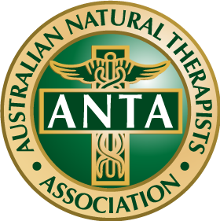

So at the moment I'm wokring two jobs. One as a prison officer where I've been wokring for the past 6 years but within the Correcitonal System for the past 16 years and the other is about as far away from the first job as you could nearly get. I'm a remedial massage therapist.
I started my Remedial course as a way to help my wife and mother-in-law with our massage shop. We opened the shop with only two workers and I was looking for a path our of the prisons. Since graduating I've completed of few add-on courses to help expand my scope to include sports taping/strapping and Instrument Assisted Soft Tissue Massage (IASTM). But that's just one of the many things I'm doing to help. I'm also doing this course so to create our website that I purchased but never got around to acutally doing anything with.
My aim is to complete as many of these courses as possble to both save on expenses, create my own content and I think in the future help with my kids' education assistance. I mean everything is going digital just about so knowing how to create a webpage and use all the different software will be a big benefit to them and me.
So getting back to my massage stuff. I graduated in April 2023 and have since be come of a member of the Australian Natual Therapists Association. This has provided me with my provider numbers to allow clients to claim rebates for treatments through their insurer. Also it gives me access to online resources to help further my education. My goal is to be able to replace my current income through rememdial massage so that I can finally leave the prison system. It's not just prisoners who don't want to go back to jail lol.
